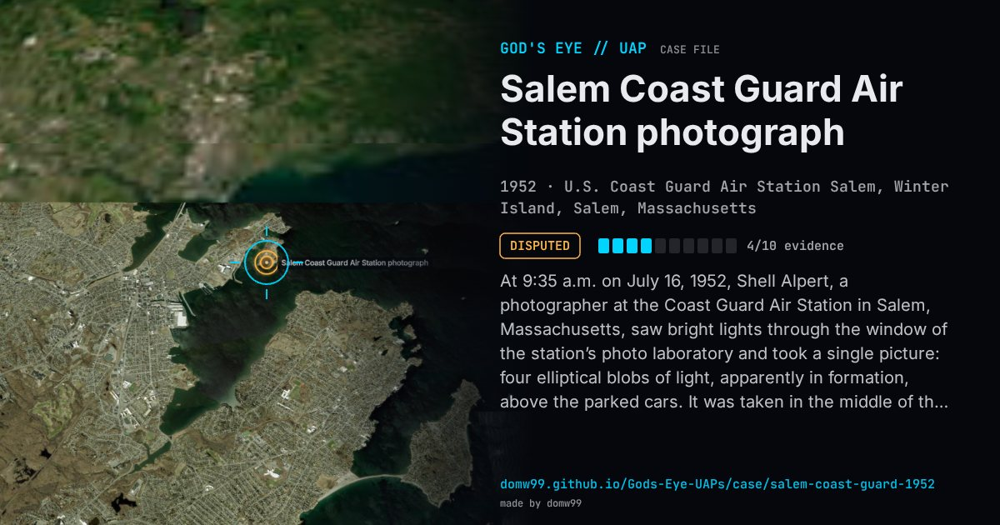

Salem Coast Guard Air Station photograph

At 9:35 a.m. on July 16, 1952, Shell Alpert, a photographer at the Coast Guard Air Station in Salem, Massachusetts, saw bright lights through the window of the station’s photo laboratory and took a single picture: four elliptical blobs of light, apparently in formation, above the parked cars. It was taken in the middle of that summer’s wave of sightings and was soon in the newspapers. Blue Book’s file, case 1501, holds sixteen photographs and a series of analyses: the first suggested a double exposure, a second that the “objects” were reflections of interior lights on the glass, a test with a photo-flood lamp showed that a real light source would also have been reflected in the cars, which these are not, and the case finished as unexplained. It is one of the best-known UFO photographs, and one of the plainest examples of how hard a single frame is to settle.
Explanation
Blue Book’s analysts went back and forth: a probable double exposure, then probably reflections of lights on the window glass, and in the end the case was filed as unexplained. Against the reflection idea, the parked cars in the photograph reflect the sun but not the lights, and some accounts say the window was open, with only a screen.
What was seen
Shape: Four elliptical blobs of light in formation, with rays
Witnesses: Shell Alpert, a Coast Guard photographer’s mate; a second Coastguardsman reportedly saw the lights
Duration: Seconds
Sources
- Project Blue Book photo file 1501, Salem, July 1952 (Internet Archive)
- Blue Book photo case 1501 and its analyses (transcribed)
Browse
- United States
- 1950s
- Disputed
- Photo and video cases
- Official government documents
- Military witnesses
- Photographs
- Lights and fireballs
- Formations and rows of lights